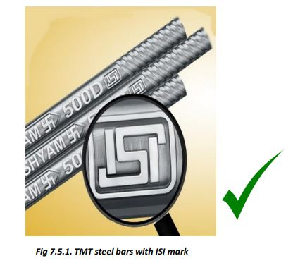
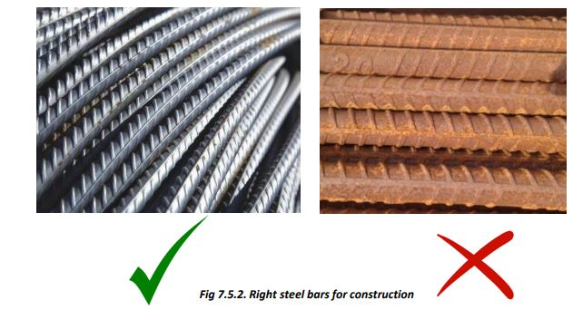

 
● Always purchase TMT steel bars of specified diameter and of a reputed manufacturer.
● Confirm that the bars bear BIS quality mark.
● Make sure that steel bars are cut, bent, and tied as per the given dimension and shape, and are tied together strongly using 20 gauge M steel binding wire.
● Check that the steel bars remain in their position while concreting and vibrating the concrete.
● The steel bars should be rust-free and should not break when bent in a close U shape.
● Slight yellowish bars that can be cleaned can be used, but reddish bars with rust and crusting should not be used.
● Store the bars so that the bars do not come in contact with moisture, soil, oily/greasy substances.
● While making cages for beams/columns and for roof slabs, check that the diameters and placement of bars used are as per the given details/drawings.